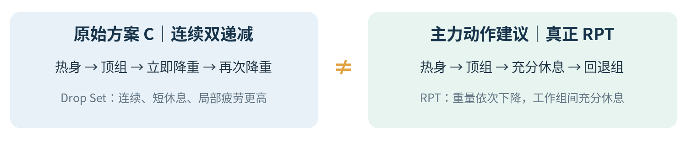

快速目录｜按你正在找的问题阅读
| 问题编号 | 你的问题／要找的答案 | 对应章节 |
|---|---|---|
| Q1 | RPT、连续递减组、双重渐进和超量恢复能不能一起用？ | 第1章／第2章 |
| Q2 | 1组重组＋连续2次递减到底叫什么？如何记账？ | 第2章／第5章 |
| Q3 | 增加动作数量和角度，会不会刺激到更多肌纤维？ | 第3章 |
| Q4 | 胸、背、股四、股二、肩部日具体怎样安排？ | 第4章 |
| Q5 | 递减组与普通正式组的训练量如何比较？ | 第5章 |
| Q6 | 双重渐进与递减组怎样长期进阶？ | 第6章 |
| Q7 | 如何理解超量恢复、判断是否需要减少训练量？ | 第7章 |
| Q8 | 相关论文、训练博主和视频去哪看？ | 第8章 |
阅读顺序推荐：第一次读 1→2→3→4→5→6→7；以后训练中遇到问题直接按 Q 编号查。
两段原始提问与回答匹配
Q1｜原问题：RPT＋递减组＋双重渐进＋超量恢复是否可行？
提问原意：先正金字塔热身约3组；三大项先做1组大重量，再连续2次降低重量；其他动作也想采用有限组数，多选动作和角度，刺激更全面。希望了解论文、博主、视频。
回答结论｜组合思路可行，但应区分RPT和Drop Set；不建议把所有动作都做大重量连续递减，也不建议简单以动作数量最大化代替有效刺激。
回答核心｜主力动作负责较高质量的力量表现；辅助复合动作负责不同功能和训练角度；孤立动作提供局部刺激；恢复成本必须计入选择。
实际建议｜对卧推、深蹲、硬拉及RDL等高技术复合动作，优先“顶组＋有休息的回退组”；少数稳定器械动作可以选择最后一组递减。
Q2｜原问题：我选择方案C，五个训练日怎么落地？
提问原意：确认1组重组后立即连续2次递减，要求结合胸、背、股四、股二、肩部日分析训练量、动作多样性、超量恢复和长期渐进超负荷。
回答结论｜方案C在术语上是1个双递减组序列（Top Set＋Double Drop），不是通常带充分组间休息的RPT。
回答核心｜方案C可以被单独记录和管理，但不能把“顶组＋2次降重”直接视为3个传统正式组；五训练日应按动作性质与疲劳成本分工。
实际建议｜把连续递减放在夹胸、腿屈伸、腿弯举、直臂下拉或侧平举等少数可控动作；主力三大项以有休息的工作组为主。
两段回答的共同结论
| 你想保留的理念 | 讨论后的边界 |
|---|---|
| 大重量优先＋后续补容量 | 可以，但“高重量＝必然更大增肌”不成立 |
| 多角度覆盖不同肌肉功能 | 合理；避免仅为增加动作数重复刺激 |
| RPT与双重渐进结合 | 可以；一个是组次组织方式，一个是长期进阶规则 |
| 运用超量恢复 | 看实际表现与疲劳，不追逐假定恢复峰值 |
训练术语：你的方案C与最终建议不能混为一谈

| 概念 | 怎么做 | 使用定位 |
|---|---|---|
| 正金字塔热身 | 逐步加重，重复次数通常减少，避免热身力竭 | 主力动作正式组之前 |
| RPT倒金字塔 | 正式组先重后轻、次数通常增加、组间正常休息 | 卧推／深蹲／硬拉的优先方案 |
| Top Set＋Back-off | 1组较重顶组，降重完成其余工作组 | 与RPT形式可以重叠 |
| Drop Set递减组 | 接近力竭后迅速降重，少休或不休继续重复 | 时间效率工具，更适合部分器械动作 |
| Double Progression | 在目标范围内先增加次数，达标再增加重量 | 大多数辅助动作的进阶方案 |
| RIR剩余次数 | 结束该组时预计还能保持技术做出的次数 | 校准努力程度和训练负荷 |
原始方案C：应如何如实记录？
| 阶段 | 示意 | 记录建议 |
|---|---|---|
| 热身 | 40kg×10 → 60kg×5 → 75kg×2 | 记作热身，不算正式组 |
| 顶组 | 90kg×6 | 第1段工作表现 |
| 第一次立即降重 | 75kg×8 | 第2段（Drop 1） |
| 第二次立即降重 | 60kg×9 | 第3段（Drop 2） |
该序列仅为示意，不是推荐在杠铃卧推上这样实施的处方。数字并不代表固定降重比例。
如何计数｜记录为“1个双递减序列＋3段具体数据”。没有可靠通用公式能将它自动换算成3个传统有效组。
为何建议修正｜深蹲、传统或半程硬拉、杠铃RDL对技术稳定要求更高；重组后连续逼近力竭会提高动作变形和疲劳风险。
更可实施版本｜热身→1组较重Top Set→休息约2–4分钟（按动作及恢复调整）→1–2组回退组；其余动作持续双重渐进。
动作多样性：多角度有价值，但不等于越多越好
Q3｜你的原始推理
“动作越多、角度越多，刺激到的肌肉纤维也越多，所以增肌效果可能更好。”
保留的合理点｜不同关节角度、肌肉长度、阻力曲线和稳定条件，可能产生互补刺激，并影响区域性肌肥大。
必须修正的点｜不能认定增加一个新角度就必然募集一批“以前练不到”的肌纤维；重复性动作越多、疲劳越高，边际增益可能下降。
原则改写｜不是“动作越多越好”，而是“用尽可能少的重复性动作，覆盖肌肉重要功能和不同受力条件”。
股四日：用已有动作判断互补性
| 动作 | 主要价值 | 与其他动作的关系 |
|---|---|---|
| 杠铃深蹲 | 股四、臀部、多关节力量 | 与哈克、保加利亚存在膝伸重叠 |
| 哈克深蹲 | 更稳定的股四训练 | 与杠铃深蹲互补，但仍有功能重叠 |
| 腿屈伸 | 孤立膝伸，包含股直肌刺激 | 提供不同于复合深蹲的刺激 |
| 保加利亚分腿蹲 | 单侧力量与控制 | 训练价值高，但恢复和稳定性成本也存在 |
| 坐姿髋内收 | 针对髋内收肌群 | 作用与膝伸训练不同 |
实际操作：每次考虑增加动作，先回答三问
- 新动作是否覆盖现有动作很少训练的功能、活动范围或阻力方向？
- 现有动作的质量或恢复是否已经受影响？若受影响，先精简重复组数。
- 新动作能否稳定保留至少数周，以便客观比较重量、次数、RIR和反馈？
来自两段讨论的落地结论
胸部｜推举已有平板、上斜和下斜，夹胸提供不同功能；哑铃飞鸟不必为了凑角度硬加。
背部｜正手/对握下拉存在一定重叠；坐姿划船、直臂下拉与反向飞鸟功能有所区别。
股二｜杠铃RDL、哑铃RDL、六角杠硬拉、山羊挺身会叠加髋伸和腰背疲劳；腿弯举提供膝屈功能。
相关证据与局限见第8章 Kassiano 等（2022）；研究支持有计划的动作变化，不支持无限叠加动作。
五个训练日：动作分工与保留建议
这里保留前述回答建议的“较精简版本”，不是自动覆盖你原来网站里记录的具体组数。后续若想继续沿用原组数，需要根据总训练量与恢复另行核对。
4.1 胸部日
| 动作 | 方法／建议正式组 | 为什么这样安排 |
|---|---|---|
| 杠铃卧推 | 顶组＋有休息回退组；2–3组 | 高负重技术与力量进步 |
| 上斜哑铃卧推 | 双重渐进；2组 | 补充上斜推举刺激，避免全程冲重 |
| 器械下斜推胸 | 双重渐进；2组 | 稳定累积额外胸部训练 |
| 器械夹胸 | 双重渐进；2组；最后1组可选递减 | 孤立胸部，可控强化技术 |
| 哑铃飞鸟 | 可选双重渐进；1–2组 | 仅当确有互补价值、恢复允许 |
胸部日关键建议｜优先把杠铃卧推做得稳定可进阶，夹胸是比杠铃卧推更适合尝试双递减的位置。
4.2 背部日
| 动作 | 方法／建议正式组 | 注意事项 |
|---|---|---|
| 半程硬拉（Rack Pull） | 顶组＋有休息回退组；约2组 | 偏上背/竖脊肌负荷，不等于背阔主练动作 |
| 正手高位下拉 | 双重渐进；2组 | 垂直拉，重视动作稳定 |
| 对握高位下拉 | 双重渐进；2组 | 和正手下拉存在一定重叠 |
| 坐姿宽距绳索划船 | 双重渐进；2–3组 | 水平拉，补充中背训练 |
| 器械反向飞鸟 | 双重渐进；2组 | 后束为主 |
| 绳索直臂下拉 | 双重渐进；2组，可选递减 | 背阔单关节导向强化 |
| 肱三头肌训练 | 双重渐进；视周训练量安排 | 按你原始背日选择保留，不擅自改成二头 |
背部日关键建议｜半程硬拉不是高位下拉／划船的替代品；当恢复不足时，优先精简两种下拉中的重复训练量。
4.3 股四日
| 动作 | 方法／建议正式组 | 关键建议 |
|---|---|---|
| 杠铃深蹲 | 顶组＋回退组；2–3组 | 关注髋膝控制，不用双递减追极限 |
| 哈克深蹲 | 双重渐进；2组 | 稳定积累股四训练 |
| 腿屈伸 | 双重渐进；2组，最后1组可选递减 | 递减比自由深蹲更易控制 |
| 保加利亚分腿蹲 | 双重渐进；2组 | 单侧稳定，减少借力 |
| 坐姿髋内收 | 双重渐进；2组 | 单独服务髋内收肌 |
4.4 股二／后侧链日
| 动作 | 方法／建议正式组 | 关键建议 |
|---|---|---|
| 杠铃罗马尼亚硬拉 | 顶组＋回退组；约2组 | 控制髋屈与离心，不必接近极限 |
| 哑铃罗马尼亚硬拉 | 双重渐进；约2组或精简 | 与杠铃RDL有明显重叠 |
| 坐姿腿弯举 | 双重渐进；2–3组，可选递减 | 补充膝屈肌群训练 |
| 单侧腿弯举 | 双重渐进；每侧2组 | 观察左右差异 |
| 山羊挺身 | 双重渐进；2组 | 当腰背疲劳很高时可缩减 |
若股二日还安排六角杠硬拉，不能在不删减其他动作的情况下直接叠加多组大重量。
4.5 可选肩部日
| 动作 | 方法／建议正式组 | 关键建议 |
|---|---|---|
| 史密斯机推举 | 双重渐进；3组 | 胸日已练前束，避免再无限加量 |
| 站姿杠铃推举 | 双重渐进；2组 | 按恢复决定必要性 |
| 坐姿锤式握法器械肩推 | 双重渐进；2组 | 与前两项肩推重复性较高 |
| 器械把手侧平举 | 双重渐进；2–3组，可选递减 | 可控地集中刺激中束 |
| Y字绳索侧平举 | 双重渐进；2组 | 侧束训练角度补充 |
| 绳索反向后束飞鸟 | 双重渐进；2组 | 后束优先保持标准动作 |
肩部日关键建议｜可选肩日不必强塞RPT；胸日的推举已经影响肩部前束恢复，侧平举与后束质量更值得关注。
怎么记录训练量？不要重复计算
Q5｜1个双递减序列能否当作3组普通正式组？
不能默认等价。你可以记录三段的负重和次数，但没有公认可靠的固定“有效组换算比例”。
| 训练形式 | 记录单位 | 应该保留的数据 |
|---|---|---|
| RPT | 每个有正常休息的工作组分别记录 | 重量、次数、RIR、休息、动作技术 |
| Double Drop | 1个双递减序列＋3段数据 | Top/Drop1/Drop2各自重量与次数、降重间隔 |
| 普通双重渐进 | 每组独立记录 | 每组次数和是否达到目标RIR |
| 周训练量 | 按肌群汇总可比较的高质量正式组 | 考虑复合动作的间接贡献，避免过度精确换算 |
训练量原则与超量恢复的关系
原讨论参考｜每块主要肌群每周约6–12组高质量传统工作组可作为某些训练者的保守试验起点，但绝不是所有人必须达到的固定标准。
真正要看｜每个肌群在整周或整个训练轮换中得到多少高质量刺激；后续动作有没有因主力动作疲劳导致技术下降。
动作多并不自动更好｜例如股四五个动作各做2组已是10个正式组；若每个动作又补两段递减，疲劳上升但肌肥大收益不一定按比例增加。
双重渐进和递减组如何长期进阶
规则A：普通双重渐进（器械下斜推胸示例）
| 训练次数 | 第1组 | 第2组 | 第3组 | 下一步 |
|---|---|---|---|---|
| 第1次 | 12 | 10 | 9 | 同重量继续增加次数 |
| 第2次 | 12 | 11 | 10 | 继续累积稳定次数 |
| 第3次 | 12 | 12 | 12 | 若RIR与动作质量达标，小幅加重 |
规则B：双递减组（腿屈伸示例）
| 段落 | 示意负重 | 示意次数 | 下次怎么进阶 |
|---|---|---|---|
| 顶组 | 50kg | 10 | 优先把顶组次数提高至既定上限 |
| Drop 1 | 40kg | 8 | 比例适当降重，保持技术和一致规则 |
| Drop 2 | 30kg | 9 | 记录表现，不要求每次三段全部刷新 |
50/40/30kg仅用于说明记录逻辑；此处也不代表每次都应训练到完全力竭。
共同进阶思想｜在相近技术、活动幅度和努力程度下，长期稳步增加次数或重量；短期训练表现存在正常波动。
超量恢复、疲劳管理与每周复盘
Q7｜怎样判断这套训练能长期执行？
超量恢复 ≠ 练得越累，之后反弹就越大；酸痛消失 ≠ 找到了固定的最佳超量恢复时间。
| 每周复盘维度 | 具体怎么检查 |
|---|---|
| 训练表现 | 同等技术与RIR下，重量、次数是否呈长期上升趋势？ |
| 恢复状态 | 下一次轮到相同肌群时，能否完成计划的动作？ |
| 动作质量 | 是否有借力、活动度下降、明显代偿或关节疼痛？ |
| 可持续性 | 是否经常因过度疲劳而取消训练、长期难以提高？ |
建议的观察窗口（非科学确定的唯一最优周期）
| 观察阶段 | 记录重点 | 可选调整 |
|---|---|---|
| 第1–2周 | 熟悉负重、RIR与动作模式 | 不急于添加Drop Set |
| 第3–4周 | 尽量稳定增加重复次数或工作重量 | 维持能恢复的有效组 |
| 第5–6周 | 综合比较进步与疲劳 | 必要时削减组数／减载／简化动作 |
减量触发｜如果连续2–3次相关训练表现下降，同时睡眠差、疲劳高或技术恶化，先审视恢复和训练量。
疼痛提醒｜此前讨论出现过髋部紧张、膝踝不适和单侧稳定问题；若仍存在，不宜用近极限RPT或连续递减强推深蹲／硬拉。
长期准则｜不以练完是否特别累衡量训练价值；以数周至数月的能力与围度变化，以及可持续性衡量。
论文、博主与视频：按问题找资料
这里引用独立资料库中的研究、人物与视频条目。点击先查看站内资料，再从条目页前往论文原文或 YouTube。
8.1 与Q2、Q5对应：Drop Set效果及代价
Sødal 等（2023）｜Effects of Drop Sets on Skeletal Muscle Hypertrophy
系统综述和Meta分析：递减组与传统组均促进肌肥大，组间未观察到显著差异；递减组可节约训练时间。
Havers 等（2026）｜Acute and Chronic Effects of Drop-Set Training
系统综述和Meta分析：长期肌肥大、力量改善接近；递减组的急性主观用力感更高，恢复需要考虑。
8.2 与Q3对应：动作多样性是否改善区域增肌？
系统综述：有计划的动作变化可能帮助区域性适应；过度随机、更换频繁与重复动作可能妨碍训练。
8.3 博主与视频：保留原推荐及相应重点
| 创作者 | 最值得学习的部分 | 优先观看 |
|---|---|---|
| Jeff Nippard | 训练量、动作组合、如何记录有效组 | 与Mike Israetel对谈：TRAINING VOLUME & HYPERTROPHY |
| Mike Israetel / RP | 垃圾训练量、疲劳、递进与恢复 | When More Sets Become Junk Volume |
| Eric Helms / 3DMJ | 自然健美长期规划、自我调节、训练逻辑 | 3D Muscle Journey频道与Muscle and Strength Pyramids |
Jeff Nippard × Mike Israetel｜Training Volume & Hypertrophy
包含：如何计算Drop Set、训练量的个人化、不同负重组以及区块周期化的讨论。
Renaissance Periodization｜When More Sets Become Junk Volume
聚焦何时增加组数开始降低训练的收益／疲劳比。
循证增肌、动作选择和训练计划。
Renaissance Periodization 官方频道
训练量、肌肥大和疲劳管理。
Eric Helms所在团队的自然健美与力量训练。
行动页｜从这些讨论中保留下来的最终可执行方案
训练前：选方式
| 先看动作类型 | 优先方法 | 当日任务 |
|---|---|---|
| 杠铃卧推／深蹲／半程硬拉／RDL | 顶组＋正常休息回退组 | 技术标准、顶组次数／重量、回退质量 |
| 其他辅助复合动作 | 双重渐进 | 稳定次数范围；全部达标后小幅加重 |
| 夹胸／腿屈伸／腿弯举／直臂下拉／侧平举 | 双重渐进为主，偶尔可选双递减 | 最后一组强化，计入训练记录并观察恢复 |
训练中：分别怎么记录
RPT｜热身不算正式组。正式组记录重量×次数×RIR、休息时间；回退组逐组记录。
Double Drop｜标记为一个双递减序列，记录每段重量和次数；不要换算成3组普通训练。
双重渐进｜按目标次数范围推进，只有达到预定目标且动作/RIR稳定才加重量。
训练后：按四件事复盘
□ 本次最重要的主力动作表现是否可以与过去比较？
□ 辅助动作是否补充了不同功能，还是仅重复相似角度？
□ 今日总疲劳有没有破坏后续训练日动作质量？
□ 下一轮是否应维持训练量、减少组数或恢复更多？
最终理念提炼
不是把每一个动作都训练得更狠，而是在可恢复的前提下，持续提高肌肉承受的高质量刺激。RPT、Drop Set和双重渐进只是不同工具；核心仍是动作选择、持续进步与疲劳管理。
原始想法 vs 最终建议｜一次性回看
| 保留你的探索 | 讨论后更精确的说法 |
|---|---|
| 先重组，再两次降重 | 短休连续降重是Double Drop；充分休息逐组降重才更接近RPT |
| 动作越多，刺激更全面 | 系统覆盖功能与角度，去掉冗余动作，不以动作数为KPI |
| 堆更多容量会增肌更快 | 根据可恢复的高质量工作组推进，警惕边际收益下降 |
| 运用超量恢复 | 通过训练记录与恢复状态调整，避免迷信固定峰值 |
| 每次训练都要进步 | 以数周长期趋势判断，不强迫每一组刷新记录 |
资料性质：对所选两段聊天的专题整理与建议汇编，不是医学诊断，也不是已根据最新身体数据核算的个人训练处方。示例负重、组数可在实际训练记录中持续校准。